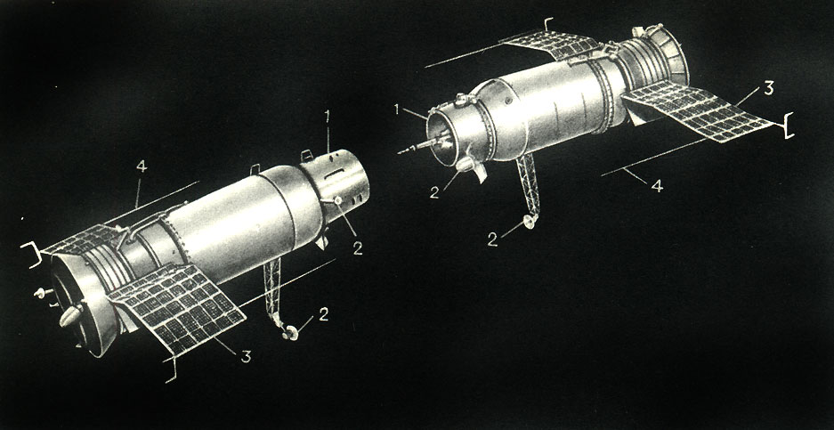
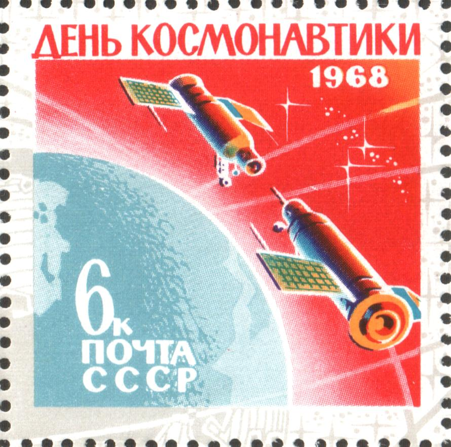

October 30, 1967 - the two Soviet spacecrafts (Kosmos 186 and Kosmos 188) made the first fully automated space docking in the world. Mutual search, approach, mooring, and docking were automatically performed by the IGLA-system on board Kosmos 186. After 3.5 hours of joint flight, the satellites parted on a command sent from the earth and continued to orbit separately.
- Kosmos 186 was launched in 27 October 1967, 09:30:00 UTC Baikonur Site 31 and landed in 31 October 1967, 08:20 UTC
- Kosmos 188 was launched in 30 October 1967, 08:09:00 UTC Baikonur Site 1 and landed in 2 November 1967, 09:10 UTC

